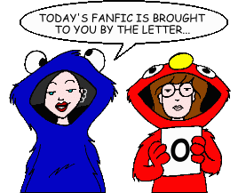
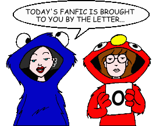

Fan Fiction
"O" by Title

Fan Fiction
"O" by Title

|
Authors: If you no longer wish for any of your stories to be posted, please send e-mail to fanfic@lawndale.net and I will remove them at once. |
| O Holy Nightmare By Jill Friedman Category: Holidays When Tom invites Daria to the Sloane's Christmas party, Daria has to endure the ultimate humiliation: allowing Quinn and Helen to help her find an appropriate ensemble. But that turns out to be nothing compared to what happens when she actually gets there! |
| O'Neill's Epiphany By Bacner Category: Miscellaneous O'Neill offers has a self-revelation and shares it with the world. |
| Oath of Office (*) By Guy Payne Category: Miscellaneous A familiar President Elect take the oath of office from a familiar Chief Justice of the Supreme Court. From a PPMB Iron Chef. |
| Observational Skills By Brother Grimace Category: Holidays The Morgendorffer daughters celebrate Groundhog Day in their own loving manner. |
| An Ode to Tiffany Blum-Deckler By Brandon League Category: Miscellaneous Just like the title says: an ode to The One Who Takes Forever to Say Five Words. |
| Of Farce and Tragedy By Thomas Mikkelsen Category: Miscellaneous Quinn looks for love. Daria tries to help her. But how can either happen when Jake won't let them have the car? |
| Of Lifestyle Choices and Definitions of Success By Wyvern337 Category: Past & Future In the future, some issues Daria and Helen have over the course Daria's life has taken come to something of a head. |
| The Omega Cynic By Mystik Slacker Category: Sci-Fi, Fantasy & Horror It's the end of the world as we know it, but Daria finds the apocalypse to be less satisfying than she expected. Based very loosely on the concept for the 1971 movie "The Omega Man." |
| The Omega Jane (*) By The Angst Guy Category: Sci-Fi, Fantasy & Horror After a lethal pandemic kills almost everyone alive, Jane Lane inherits the earth--but only from dawn to dusk. Cannibalistic ghouls in the billions arise after sunset, and Daria Morgendorffer is one of them. A horror tale inspired by Richard Matheson's classic novel of paranoia and vampirism, "I Am Legend" (later filmed as "The Omega Man"). Note: This story includes content (language, violence, or sexual situations) that may not be appropriate for some readers. |
| On a High Note By Galen Hardesty Category: Miscellaneous Glenn bids Daria farewell and tries to give her a spectacular sendoff. |
| On Guard (*) By Kemical Reaxion Category: Miscellaneous Daria takes on the job of crossing guard as part of her forced participation in Career Observance Day, while Jane seizes the opportunity to humiliate Quinn by bringing her modeling career to a screeching halt. |
| On the Outside [Artwork] By Jon Kilner Category: Miscellaneous While Jane is out of town enduring a family gathering, Jodie tries to help Daria fit in by convincing her to attend a school dance. |
| Once More, With Sitting By Richard Lobinske Category: Miscellaneous With Jane out of town and her parents planning a movie night in, Daria accepts an emergency babysitting job with the Guptys. Set in season 4 sometime between "I Loathe a Parade" and "Fire." |
| Once Upon a Time in Lawndale By Disco 3:16 Category: Crossovers & Parodies A red-haired traveller looking for revenge.A babyfaced killer looking for power.A fashionable outlaw looking to clear her name.A gentleman from the East looking for a better life.It all happened once upon a time in Lawndale. |
| Once Upon a Time in the Future By Galen Hardesty Category: Past & Future Another Daria reads Daria's diary. |
| The One Day We Forget By Brother Grimace Category: Miscellaneous The first of three BG/Angelinhel challenges, it involves Quinn and Jake taking a trip, and paying tribute to an unexpected person from his past. |
| One Hundred Percent [Artwork] (*) By Kemical Reaxion Category: Miscellaneous After the events of "Dye! Dye! My Darling," Jane finds herself alone with no one to turn to. Reluctantly, she finds a friend in the most unlikely of people -- Monique. But after confiding in her, Jane realizes Monique has a few secrets of her own. |
| One More River to Cross (*) By The Angst Guy Category: Miscellaneous In helping Sandi Griffin through a difficult situation, Quinn Morgendorffer must make a decision that could determine her own nature, for good or for evil... but which choice is the right one? Note: This story includes content (language, violence, or sexual situations) that may not be appropriate for some readers. |
| One Night By WWMyra Category: Romance Daria and Jane attend a party at Mystik Spiral bandmember Max's house. Daria ends up drinking too much of the spiked punch... and has the mother of all regrets when she wakes up the next morning. |
| One Night (prose version) By Dark_One Shadowphyre Category: Romance Daria and Jane attend a party at Mystik Spiral bandmember Max's house. Daria ends up drinking too much of the spiked punch... and has the mother of all regrets when she wakes up the next morning. Original story by WWMyra. |
| One Night in Lawndale By Bacner Category: Miscellaneous The events of a night in Lawndale, post-"IIFY". |
| One Night in Lawndale By Ronin Category: Crossovers & Parodies A parody of the Murray Head song "One Night in Bangkok" (from the play "Chess"), set in the Daria universe. |
| One Night Stand: A Misleading Title By Mitch Category: Romance Daria goes to watch Trent play at McGrundy's Pub. |
| One Saturday in Lawndale By Bacner Category: Miscellaneous One Saturday in the lives of Daria and Jane (and their families). Takes place after "One Night in Lawndale." |
| One Step Forward By Dennis Category: Past & Future A chance encounter on Dega Street leaves Daria with a decision to make about one of her old teachers. |
| One Way to Do It By TippedOver Category: Miscellaneous Stacy prepares for her driving test, and Dad is ready to give some advice... |
| One-Band Town By Danny Bronstein Category: Crossovers & Parodies A crossover with the TV series "South Park." |
| Open Windows By DJW Category: Series & Multi-Part Stories (Miscellaneous) (no description given) |
| The Original Underground Government-Suppressed Version of Brother Grimace's Classic "Daria" Fanfic, "The Sun Will Come Out, Tomorrow" (*) By The Angst Guy Category: Miscellaneous A sad example of what happens when a fanfic writer takes a well-known opening scene from another fanfic writer's story and mucks it up, abusing other fanfic writers in the process. There ought to be a law. However, since there isn't, you may as well read this. |
| The Other Side of the Mirror (*) By Queen Jossie Category: Miscellaneous The past events through the eyes of Tom, plus a pitiful shipper ending. |
| The Other Side of Time By The Sidhe Category: Series & Multi-Part Stories (Romance) "Somewhere in Time" meets "The Guns of the South" as Daria and Jane befriend who they believe is a charming gentleman from the "old school" South. A budding romance threatens to become extremely complicated, however, when it is discovered that not all is as it appears to be. |
| The Other Story of D (*) By The Angst Guy Category: Miscellaneous Jane discovers a short story that Daria wrote during a low period in her life, and she gains a front-row view into one of Daria's nightmares--and the part that Jane plays in it. |
| Other Wings By BTL Category: Miscellaneous Sometimes the future doesn't turn out at all like you expected. A PPMB "Iron Chef" ficlet. |
| Otherwise Known as Quinn the Great [Artwork] By Austin Covello Category: Miscellaneous Quinn Morgendorffer is the most popular girl in school, and yet she still feels all alone. Why can't she get along with her family, especially her sister? Why does she hate her best friend? Does she really have any friends at all? The answers may shock you. |
| Our Drummer's Rusty Van By jak981125 Category: Crossovers & Parodies A Mystik Spiral parody of the Beatles' Yellow Submarine, but with a few twists. WARNING: contains enough dumb jokes to fill the Albert Hall! |
| Out of the Slushpile By Nemo Blank Category: Miscellaneous Quinn gets herself chin-deep in trouble when Helen and Jake find her and Jamie doing more than just "making out" at Makeout Point. And who do they get to be Quinn's "shadow" during her punishment? Can you say "Quinn's cousin, or whatever"? |
| Out On Vacation By Yui Daoren Category: Miscellaneous Daria and Jane admit to something while on vacation, and it tears Daria's family apart. |
| Outage [Artwork] By Mike Yamiolkoski Category: Miscellaneous Jane and Sandi are trapped in an elevator during a power failure. Will they survive the ordeal, or will justifiable homicide ensue? |
| Outage (prose version) [Artwork] By Austin G. Loomis Category: Miscellaneous A prose version of Mike Yamiolkoski's story. Jane and Sandi are trapped in an elevator during a power failure. Will they survive the ordeal, or will justifiable homicide ensue? |
| Outcast Castaways By Robert Nowall Category: Crossovers & Parodies "Just sit right back and you'll hear a tale / a tale of a fateful trip / that started from a Lawndale port / aboard this tiny ship." Yes, Daria and her friends are stranded on a certain uncharted island, where tempers begin to flare as they start getting on each others' nerves. |
| Outcasts From Beyond (*) By The Angst Guy Category: Crossovers & Parodies On her way to see Tom Sloane, Daria Morgendorffer has a car wreck--but that's only the start of her problems in this long, weird alternate-universe/crossover "Daria" tale of secret identities and super-powers that begins about halfway through "Boxing Daria" and heads into the wild blue. |
| The Outers [Artwork] By The Angst Guy Category: Series & Multi-Part Stories (Sci-Fi, Fantasy & Horror) What would happen if you literally dropped off the face of the Earth? What if you reappeared years later, to find that the world has passed you by... and that you haven't aged a single day? And what if who's responsible isn't willing to let you go? Daria Morgendorffer is about to find out. |
| Outside the Box By Mike Yamiolkoski Category: Miscellaneous Young Daria hid inside her box on the night her parents had a big fight (as chronicled in the episode "Boxing Daria"). But what actually lead up to it, and what happened afterward? |
| Over the River and Through the Mood Swings By Kristen Bealer Category: Holidays What could be worse than Thanksgiving dinner with a dysfunctional family? How about two Thanksgiving dinners with two dysfunctional families? The Morgendorffers learn this the hard way in a holiday story set six years prior to the series. |